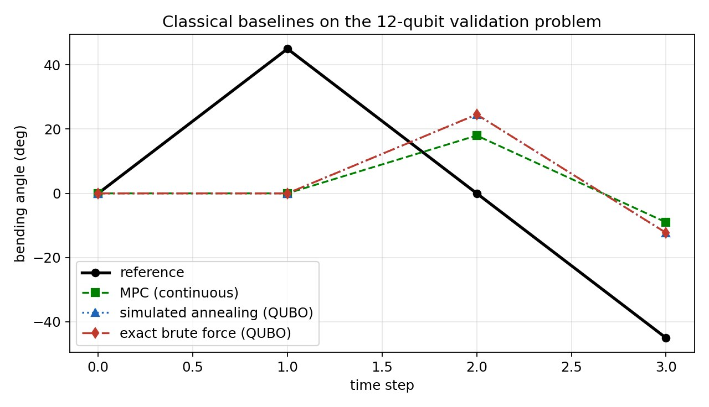
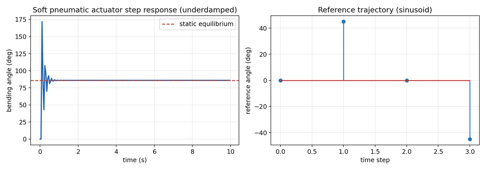
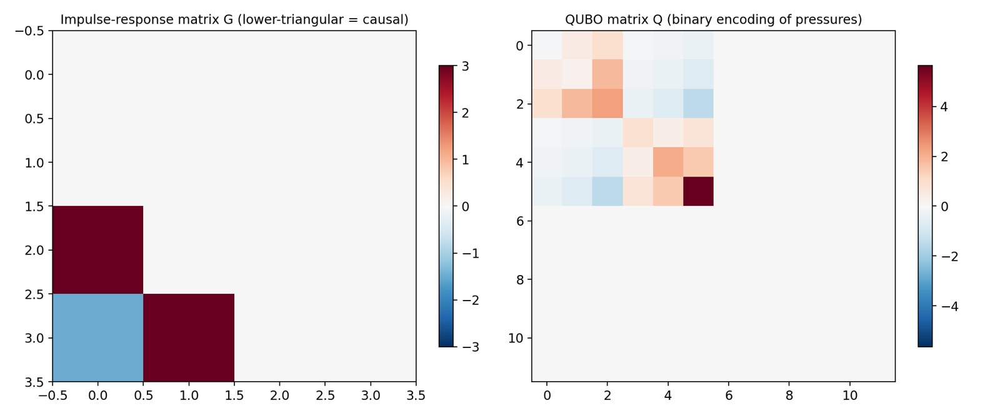
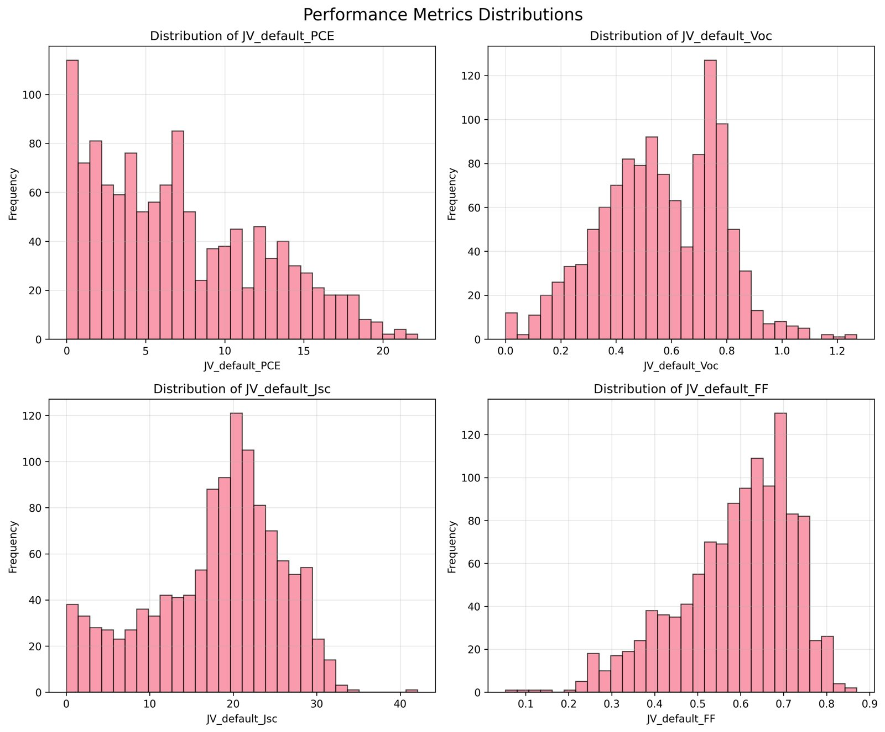
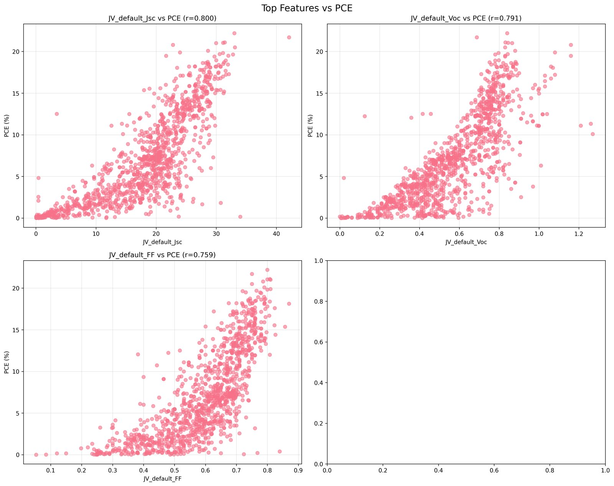

Research
Each project is described by its question, method, numbers and limits. Where a result is simulation-only or still being re-validated, it says so.
Undergraduate thesis · 2025–2026
Linear-ramp and warm-start QAOA for soft-catheter control
24qubits in the largest simulated instance2,000random bit strings used to verify the exact QUBO reduction0.7%cost of binary discretization vs continuous MPC (12 qubits)71%of the random-to-optimal gap closed at 24 qubits
- Question
- Can quantum optimization solve real-time trajectory tracking for a multi-actuator soft catheter, and does a smarter QAOA initialization make it cheaper?
- Physical model
- Each actuator is a soft pneumatic actuator, I·θ̈ + D·θ̇ + K·θ = α·P, integrated with an Euler step of 0.05 s. The response is underdamped (ζ below 1), and a unit pressure impulse gives a lower-triangular response matrix G, which makes the system causal.
- Formulation
- Pressures are encoded in n bits, P = P_min + Σ c_k b_k, so the tracking error ‖Gc·b − θ_ref‖² becomes bᵀQb plus a constant. This reduction is exact: on 2,000 random bit strings the QUBO objective matches the physical error to within 1e-8. The QUBO is then mapped to an Ising Hamiltonian through b = (1 − z)/2.
- Algorithms
- Classical MPC (continuous, SLSQP) as the performance ceiling.
- Simulated annealing on the QUBO.
- Exact brute force wherever 2^N is tractable, as ground truth.
- QAOA at depths 1 to 3, optimized with COBYLA from random starts and linear-ramp initialization, with warm-start and closed-loop extensions.
- Validation
- The code asserts physical and mathematical checks at run time: zero pressure gives zero angle, static equilibrium matches the analytic value, G is strictly lower-triangular, and no heuristic may beat brute force.
- Findings
- On the 12-qubit validation problem the exact binary optimum has an RMSE of 30.41° against 30.19° for continuous MPC, so discretization costs about 0.7%.
- The remaining error is a physical floor: pressure cannot be negative, so negative bending angles are unreachable. I treat this as correct physics, not as an algorithm failure.
- At 24 qubits, where brute-force sampling is out of reach, the best QAOA sample closes about 71% of the gap between the mean random energy (0.0417) and the exact optimum (−0.0019), averaged over 3 seeds with 800 shots.
- Limits
- Statevector simulation only, no hardware run. The actuator model is not calibrated against an experiment. The planning horizon is short.


Actuator step response and reference trajectory
Impulse-response matrix G and QUBO matrix QJINR, INTEREST programme (remote) · 2026
Adsorption of HgO on Au(111)
−2.04 eVbridge-site adsorption energy75 meVspread between sites≈216 meVensemble uncertainty601 meVmodel disagreement at on-top
- Question
- Where does HgO bind on gold, and how far can universal machine-learning force fields be trusted to say so?
- Setup
- A 4×4×5 Au(111) slab (80 atoms, a = 4.078 Å, 20 Å vacuum, bottom two layers fixed). HgO placed with O at 2.5 Å at four sites (on-top, bridge, fcc, hcp) and two tilts, relaxed with FIRE to 0.01 eV/Å, using CHGNet v0.3.0 and MACE-MP-0 without fine-tuning.
- Uncertainty
- Epistemic uncertainty from weight-perturbation ensembles (N = 5, σ = 0.001) propagated in quadrature, plus bootstrap intervals and a signal-to-noise ratio for every site pair. Slab-energy fluctuations (149 meV) dominate.
- Beyond energies
- Vibrational analysis with experimental scaling (scale factors 1.58 to 1.90) and zero-point corrections of 260 to 307 meV.
- Free energies from 200 to 900 K: adsorption stays favourable, with residence times above 10²⁰ s at 300 K.
- Langevin MD at 300 and 500 K: diffusion coefficients of 6.5×10⁻¹⁹ and 1.25×10⁻¹⁸ cm²/s, and a bond-breaking event at about 1.1 ps at 500 K.
- Coverage up to four molecules: attractive lateral interactions of −248 to −611 meV per molecule.
- Findings
- The bridge site is lowest (−2.04 eV), and HgO is strongly chemisorbed. But every site-to-site SNR is below 1 (maximum 0.25), so the site ordering is not statistically resolved. CHGNet and MACE agree at the hollow sites but differ by 601 meV on-top, and MACE fails structurally at 45° tilts (Hg–O bonds of 2.98 to 3.67 Å).
- Care
- A Materials Project lattice constant (2.95 Å) inconsistent with fcc gold was rejected in favour of the experimental 4.078 Å. All 65 quantities and 5 failure modes are documented. Next step: DFT validation and fine-tuning.

 Cross-model validation of CHGNet and MACE-MP-0
Cross-model validation of CHGNet and MACE-MP-0 Sabatier picture: all four sites bind strongly
Sabatier picture: all four sites bind strongly Epistemic uncertainty and bootstrap intervals
Epistemic uncertainty and bootstrap intervals Langevin MD: displacement and Hg–O bond length
Langevin MD: displacement and Hg–O bond length Ballistic and diffusive regimes
Ballistic and diffusive regimes Free-energy surface from MD
Free-energy surface from MDAward-winning undergraduate project · 2025
Physics-informed neural networks for lead-free perovskite solar cells
1,181curated tin-perovskite devices from 89 papers6 × 128tanh network with physics and performance heads47Pareto-optimal compositions found+61%mean PCE with SnF₂ + EDAI₂ vs no additive
- Question
- Can semiconductor physics be built into a neural network so that it predicts the efficiency of tin-based, lead-free perovskite cells from composition, and guides the search for better ones?
- Data
- From the Perovskite Database Project (40,000+ records), I kept devices with at least 50% tin on the B-site, both n-i-p and p-i-n architectures and complete PCE, Voc, Jsc and FF, giving 1,212 devices from 89 papers (2014–2023). After outlier removal, de-duplication and unit standardization, 1,181 remain, split 70/15/15 (827/177/177).
- Features
- A-site fractions (FA, MA, Cs), B-site (Sn, Pb), halides (I, Br, Cl), additive indicators (SnF₂, EDAI₂, other) and architecture (p-i-n or n-i-p).
- Model
- A multilayer perceptron with six 128-unit tanh layers and two heads: a sigmoid performance head (PCE, Voc, Jsc, FF) and a physics head for electron density, hole density and electric potential across the device. The Poisson equation, both continuity equations and the drift-diffusion currents enter as soft constraints, L = L_data + λ_phys·L_phys + λ_b·L_boundary.
- Training
- Curriculum learning in three phases: data only (first 20% of epochs), physics weight ramped from 0 to 1 (20–60%), full physics (60–100%). Adam with weight decay 1e-5, ReduceLROnPlateau, early stopping (patience 100), grid search over learning rate, batch size, width and physics weight with 5-fold cross-validation, in PyTorch on GPU.
- Search
- 10,000 Monte Carlo compositions explored with NSGA-II across PCE, Voc, Jsc and FF (47 Pareto-optimal), with Monte Carlo dropout for uncertainty. The proposed top candidate is (FA₀.₆₅Cs₀.₂₅MA₀.₁₀)Sn(I₀.₈₅Br₀.₁₅)₃ with SnF₂ and EDAI₂.
- Data findings
- Mean PCE in the dataset rises from 8.34 ± 3.21% with no additive to 11.67% with SnF₂, 10.23% with EDAI₂ and 13.45 ± 2.56% with both. PCE correlates with Jsc (r = 0.80), Voc (0.79) and FF (0.76).
- Reported model results
- The project report gives test-set R² of 0.94 (PCE), 0.92 (Voc), 0.89 (Jsc) and 0.93 (FF), and a predicted PCE of 18.45% for the top candidate. Independent re-validation of these figures is under way.

Distributions of PCE, Voc, Jsc and FF in the curated dataset

Feature correlations with PCEWith Prof. Ayman El-Amin · 2023–2024
APEX: a multifunctional protective screen for solar panels
+10%thermal-to-electric efficiency (COMSOL)+3–5%optical gain at 60 °C+≈40%estimated lifespan extension (25 to 35 years)30,000 EGPprototype funding
- Question
- Can the heat and UV that damage solar panels in Aswan (60 °C and above) be turned into useful energy instead of being mitigated?
- Design
- A transparent multilayer screen: a luminescent layer that converts damaging UV into phosphorescence, an integrated thermoelectric layer that spreads extreme heat and harvests electricity, and a self-cleaning anti-reflection nanocoating.
- Method
- Optical and thermal responses were modelled in COMSOL Multiphysics with Prof. El-Amin before fabrication, so the design was physically sound before a prototype was built.
- Outcome
- A working prototype built with competition funding, and a design proceeding to patent registration. I later declined a follow-on offer to found a company in order to continue in research.
- Note
- The lifespan figure is an estimate, since a prototype cannot be aged for decades.
Team project · Pan-African Quantum Challenge 2025
Machine-learning stacking ensemble for quantum error mitigation
36,450simulated samples3noise channelsR² 0.955stacked ensemble, test split1.47× / 2.67×error reduction (test split / extended benchmark)
- Question
- Can a learned model recover ideal expectation values from noisy quantum-circuit outputs?
- Data
- EfficientSU2 circuits with 4, 8 and 12 qubits, reps 1 to 3, linear, pairwise and full entanglement, and depolarizing, amplitude-damping and readout noise at three strengths, 150 random instances each. Noisy values come from density-matrix simulation in Qiskit Aer; the observable is the global Z-parity. Split 60/20/20.
- Models
- XGBoost (500 trees, GPU), an LSTM-enhanced network (128-unit LSTM with batch norm and dropout), and a random forest (300 trees), combined by a ridge meta-learner. Interaction features such as error rate × depth were engineered explicitly.
- Results
- The stacked ensemble reached a test MAE of 0.0319 and R² of 0.955, 14.8% better than XGBoost, 10.6% better than the network and 16.9% better than the random forest. It cut mean error by 1.47× on the held-out split and by 2.67× on a harder extended benchmark (4 to 10 qubits, depths up to 10, variational, QAOA and random circuits).
- Limits
- Performance degrades at error rates above 0.1 and for deep circuits, and models struggle to extrapolate to qubit counts or noise models outside training. The next step is validation on real hardware.
More work
- CO₂–NH₃ reaction pathways with VQE · First National Quantum Hackathon, Alexandria · 2025
- DFT geometries mapped to qubits, custom VQE circuits run on IBM quantum hardware with error mitigation, presented to an expert panel.
- AI prototype for floods and desertification · Desert Research Center, Marsa Matrouh · 2025
- First place among teams and a 5,000 EGP seed grant. A prototype pipeline for climate, groundwater, salinity and flood routing, built on synthetic data and meant to be connected to real records.
- Cosmology beyond ΛCDM · British University in Egypt · 2025
- Small team project during the summer school on alternative models and the H₀ and σ₈ tensions, using Bayesian inference.